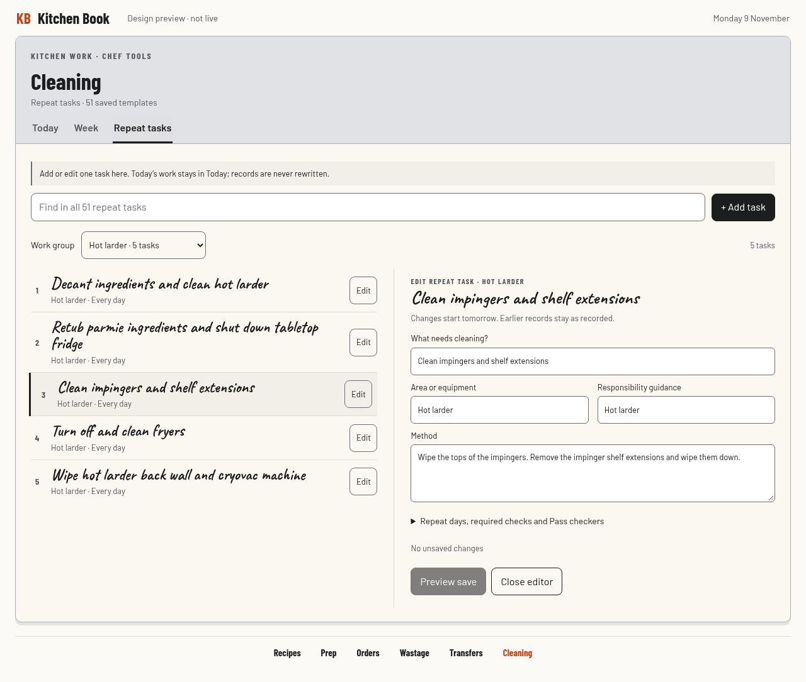
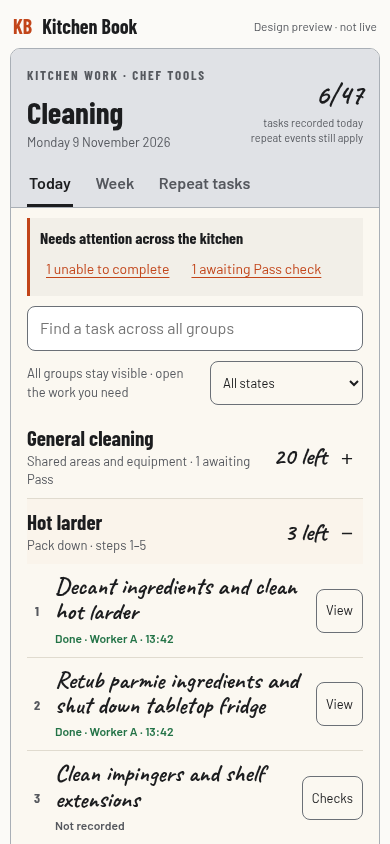
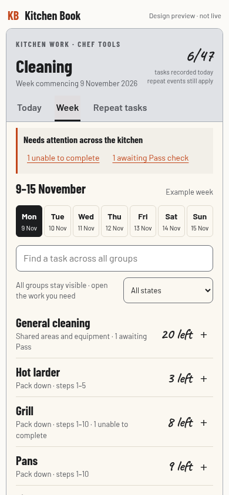
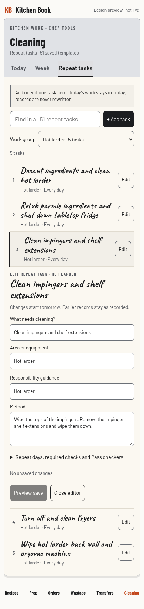

Grouped daily work. A simple setup desk.
A’s notebook for Today and Week, with B’s editor only in Repeat tasks. Same fonts, colours and cleaning programme.
Today · phone
Five groups. Open only the work you need.

Repeat tasks · desktop
Find or add a task, then edit it beside the short list.

Design preview with example progress. The council’s best later mix; plain A remains its first-build recommendation. Try the interactive preview.
Open a group
Ordered jobs and inline checks.

Week
Choose a day, then a group.

Edit on a phone
One form opens directly in the list.
